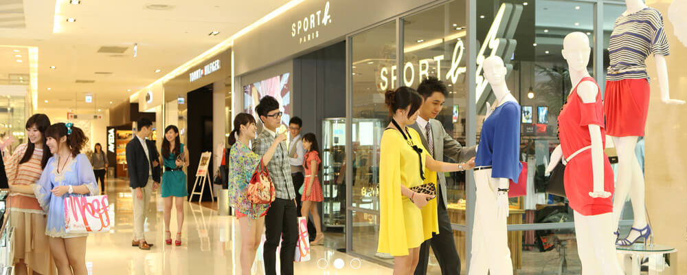

-
 遠東百貨目前在台灣有十家分公司，賣場以寬敞、舒適為規畫的原則，盡量讓消費者在逛街購物的同時，能有輕鬆、愉悅的休閒感受。
除了時尚氣氛、舒適環境之外，遠東百貨在新推出的店點特別著重主題式大型造景。Top City台中大遠百11、12樓運用六台高流明的投影機，拼接成12米寬，9米高，近三層樓高的「大型熱帶擬真海洋」，可與消費者做即時互動，彷彿沉浸在真實的海洋世界中。
Mega City板橋大遠百引人目光的焦點在9樓，斥資上億元打造的威尼斯水都造景，把300坪大、挑空3層樓高的空間保留給消費大眾休憩。呈現水都風情，打造水道、引進Gondola「貢多拉」浪漫小船，沿著威尼斯廣場安排了將近300個咖啡座，盡享潺潺流水的浪漫風情，可以在透明落地玻璃帷幕前眺望新板特區建築之美，更顯悠閒。
-
1967年成立的遠東百貨，為國內唯一上市的連鎖百貨公司，以豐富的專業知識搭配靈活的行銷策略，展現求新求變的商品內涵，不斷引領市場趨勢。
近年來遠東百貨積極轉型，引進全新概念的FE21‘，結合購物、娛樂、生活、餐飲及文化等機能，提供顧客舒適自在的購物休閒享受。2011年底開幕的板橋大遠百、台中大遠百、新竹巨城購物中心總樓地板面積近20萬坪，將完整呈現國際精品、流行時尚及獨家美食，為遠東零售系統邁入大型購物中心的里程碑。
2002年遠東集團零售版圖增加了太平洋崇光百貨及大陸太平洋百貨，一舉成為橫跨兩岸的連鎖百貨體系；崇光台北店匯集了全球時尚名牌，2009年忠孝店營業額新台幣150億元，為台灣坪效最高的百貨公司，而2006年底開幕的復興店，更結合國際精品、流行商品及美食餐飲等優質組合，年營業額超過新台幣100億元，為台北市品牌實力最堅強的百貨公司。此外，在大陸擁有多家分店的遠東百貨及太平洋百貨，更是中國時尚消費流行的指標。
2012年遠東集團第一座購物中心-BigCity遠東巨城購物中心問世，總面積達8.7萬坪，營業面積占6.9萬坪,為北台灣最大的購物中心。有崇光百貨、愛買量販店、city'super頂級超市、威秀影城、冰宮、保齡球館以及超過550個專櫃進駐，是一個全方位，也是北台灣最大的休閒購物中心。
在量販事業方面，愛買量販店為國內前三大的量販業者，提供價廉質優的商品，滿足國人日常生活所需。遠企購物中心及city’super匯集豐富的生活名品及精緻美食,滿足高品質、高品味的消費需求。
“總體營運規模大型化”加上“全客戶群體服務”，將“百貨”、“量販”、“購物中心”及“超市”全方位整合，將成為遠東新一代零售體系的全新高標準。
-
2013
- 成都北城遠東百貨股份有限公司
-
2010
- 遠東巨城購物中心股份有限公司
- 成都遠東百貨有限公司 (成都遠百天府店)
- 遠東巨城購物中心股份有限公司
- 成都遠東百貨有限公司 (成都遠百天府店)
-
2004
- 重慶遠東百貨有限公司(重慶遠百江北店)
-
2002
- 大連連太百貨有限公司(大連-MIDTOWN)
-
1997
- 重慶大都會廣埸太平洋百貨有限公司(重慶遠百大都會店)
-
1996
- 成都全興大廈太平洋百貨有限公司(成都遠百騾馬市店)
-
1993
- 上海太平洋百貨有限公司
-
1967
- 遠東百貨股份有限公司
-
2013
-

太陽寶寶
- 英文名字：SunnyBaby
- 生日：8/31
- 身高：168cm
- 體重：21個購物紙袋重
- 性格：天真無邪、開朗善良、笑容燦爛， 有用不完的活力
- 興趣：逛街、看電影、享用美食專長：樂於助人、解決各種疑問
- 特色：超級暖男-笑咪咪、無時無刻釋放正面能量、晴天時心情特別好
- 最喜歡的事：到處旅遊玩樂、購物
- 喜歡的食物：大胃王寶寶，中式或異國風料理都 是他的最愛
- 最喜歡的一段話：幸福滿溢，處處分享！
家族成員
寶慶店 Young寶寶
寶慶店位於西門町一帶，充滿年輕潮流感，連太陽寶寶也忍不住大買特買！！ 裝扮也因此跟著走young style~ 時時掛著陽光又有活力的笑容，隨身帶著相機記錄周遭的人文薈萃， 分享給每一位來訪寶慶店的旅人， 彼此愛上這個商圈的美好～
家族成員2
寶慶店 Young寶寶
寶慶店位於西門町一帶，充滿年輕潮流感，連太陽寶寶也忍不住大買特買！！ 裝扮也因此跟著走young style~ 時時掛著陽光又有活力的笑容，隨身帶著相機記錄周遭的人文薈萃， 分享給每一位來訪寶慶店的旅人， 彼此愛上這個商圈的美好～
家族成員3
寶慶店 Young寶寶
寶慶店位於西門町一帶，充滿年輕潮流感，連太陽寶寶也忍不住大買特買！！ 裝扮也因此跟著走young style~ 時時掛著陽光又有活力的笑容，隨身帶著相機記錄周遭的人文薈萃， 分享給每一位來訪寶慶店的旅人， 彼此愛上這個商圈的美好～